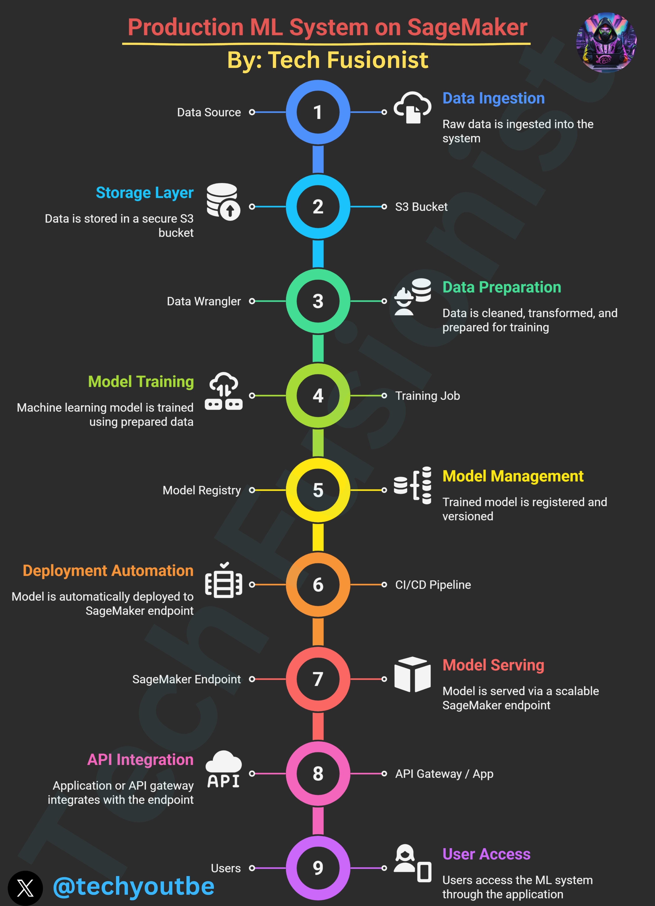
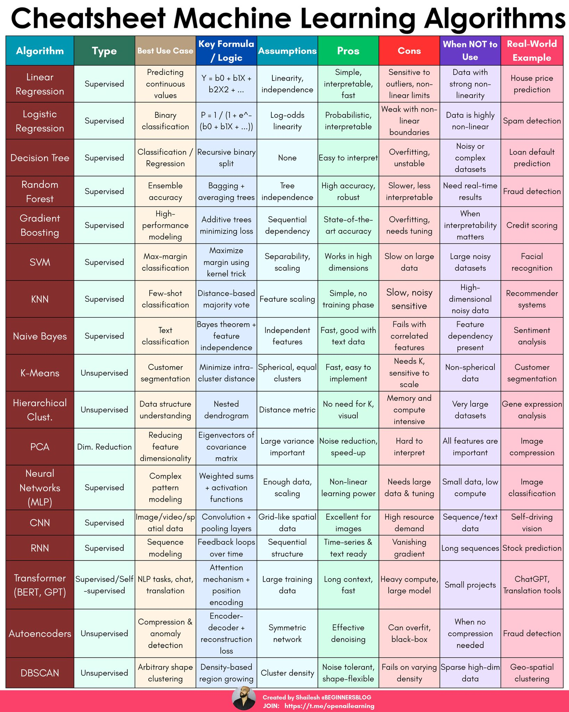
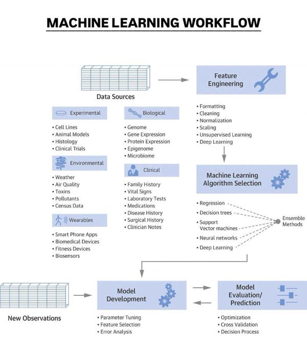
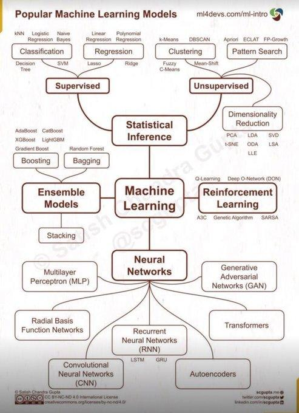

Machine Learning Build Guide
Track your ML project from concept to production
Project Dashboard
Overall Progress
0%
Tasks Completed
0/0
In Progress
0
Blocked
0
📅 Project Timeline
⚡ Next Recommended Actions
Define Your ML Problem
Step 1 of 6
📥 Data Ingestion
Raw data is ingested into the system from various sources
💾 Storage Layer
Data is stored in secure, scalable storage solutions
🔧 Data Preparation
Data is cleaned, transformed, and prepared for training
🎓 Model Training
Machine learning models are trained using prepared data
📦 Model Management
Trained models are registered, versioned, and tracked
🚀 Deployment Automation
Models are automatically deployed through CI/CD pipelines
🌐 Model Serving
Models are served via scalable endpoints
🔌 API Integration
Applications integrate with model endpoints
✨ AI-Generated Workflow
Let AI analyze your project and generate a customized workflow
🔮 Qwen
Fast & efficient
🤖 ChatGPT
Versatile & creative
🧠 Claude
Detailed & analytical
💎 Gemini
Multimodal & powerful
📚 Reference Materials
Click any graphic to view full size

ML Pipeline

Algorithm Guide

ML Taxonomy

Development Flow

Model Overview
📝 Original Prompt
Generate an HTML app with JavaScript (no REACT) that provides actionable and clickable guide for "Machine Learning Build Guide" to resources for code snippets, tutorials, descriptions, illustrations for each of these concepts from the graphics attached in the prompt. Assume Intermediate level. Assume vibrant and colorful style. Optimize for programmic iteration. Include information and examples in Python, SQL, R, and JavaScript. Use a clickable tile for each concept and each should have a clickable checkmark that I can use to mark the concept as complete.
On each tile put the links to resources, descriptions, and action steps. Use the system layer flowchart, common algorithms, workflow, and popular models that will lead users from a prompt to building a Machine Learning app.
Multiple tabs: Define Problem (Allows the user to define functions and constraints with a prompt), A tab for each step in the workflow, a tab for auto generating the workflow using either Qwen, ChatGPT, Claude, or Gemini (Combo box) to generate the output. If any of the stages have actionable things to do, those things should be seen on the tab. Include any hyperlinked resources and examples. Add a last tab "Reference" that has each graphic in a table as tiles. Clicking a tile, cause the graphic to open in a pop up window. Below that should be this prompt.